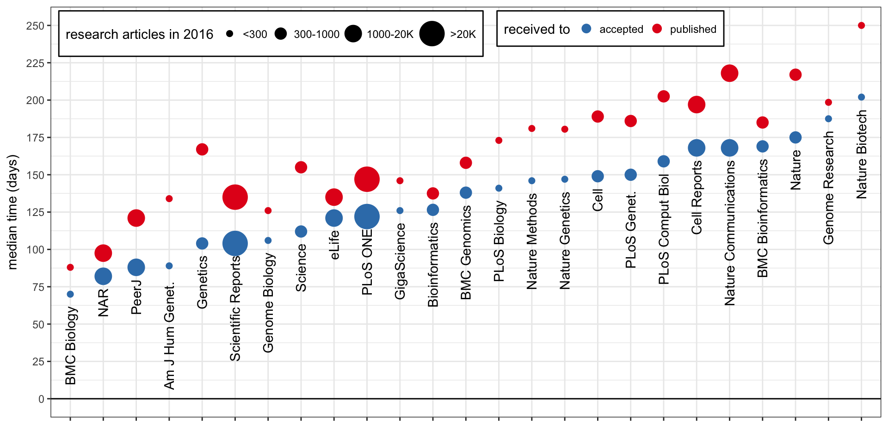

Journals comparison
Oct 15, 2017 pubSome info about journals in my field.
Summary table
| Journal | Co. | IF | OA | APC | Other fees | Pub/year | Received-to-accepted in days. median (75th perc.) |
|---|---|---|---|---|---|---|---|
| F1000Research | - | 1.2 | Y | 1000 USD | - | ||
| PeerJ | - | 2.2 | Y | 1095 USD | - | ~1290 | ~88 (139) |
| eLife | - | 7.8 | Y | 2500 USD | - | 1018 | 121 (155) |
| GigaScience | OUP | 4.9 | Y | 2050 USD | - | ~50 | ~126 (195) |
| PLoS One | PLoS | 2.8 | Y | 1495 USD | - | ~22K | ~122 (182) |
| PLoS Comp Bio | PLoS | 4.5 | Y | 2250 USD | - | ~550 | ~159 (217) |
| PLoS Genetics | PLoS | 6.1 | Y | 2250 USD | - | 644 | 150 (202) |
| PLoS Biology | PLoS | 9.8 | Y | 2900 USD | - | ~176 | ~141 (175) |
| BMC Bioinformatics | BMC/S | 2.5 | Y | 2145 USD | - | ~333 | ~169 (231) |
| BMC Genomics | BMC/S | 3.7 | Y | 2145 USD | - | ~985 | ~138 (190) |
| BMC Biology | BMC/S | 6.8 | Y | 2785 USD | - | ~85 | ~70 (108) |
| Genome Biology | BMC/S | 11.9 | Y | 2975 USD | - | ~156 | ~106 (143) |
| Cell Reports | Els | 8.3 | Y | 5000 USD | - | ~1005 | ~168 (241) |
| Scientific Reports | Spr | 4.3 | Y | 1760 USD | - | ~20K | ~104 (151) |
| Nature Communications | Spr | 12.1 | Y | 5200 USD | - | ~3519 | ~168 (228) |
| NAR | OUP | 10.2 | Y | 2770 USD | pp9 | ~1359 | ~82 (131) |
| Genetics | - | 4.6 | 12m/+ | 2000 USD | pp/pf/psf | ~374 | ~104 (163) |
| AJHG | Els | 9.0 | 6m/+ | 5000 USD | 850 USD + pf | 237 | 89 (121) |
| PNAS | HWP | 9.7 | 6m/+ | 1450 USD | 1700 USD | ||
| Genome Research | CSH | 11.9 | 6m/+ | 2500 USD | 2500 USD | ~179 | ~188 (242) |
| Cell | Els | 30.4 | (12m/+) | 5000 USD | pf | ~351 | ~149 (193) |
| Lancet | Els | 47.8 | 6m/+ | 5000 USD | |||
| Science | AAAS | 37.2 | 12m | - | ~720 | ~112 (162) | |
| Bioinformatics | OUP | 7.3 | + | 3000 USD | ~868 | ~126 (180) | |
| Nature Methods | Spr | 25.1 | N | - | ~130 | ~146 (187) | |
| Nature Genetics | Spr | 28.0 | N | - | 202 | 147 (203) | |
| Nature Biotech | Spr | 41.7 | N | - | 80 | 202 (262) | |
| Nature | Spr | 40.1 | N | - | ~855 | ~175 (246) | |
| New England Journal Of Medicine | - | 72.4 | N | - |
Open Access (OA) journal:
Y: Yes.+: Authors can pay additional Article Processing Charges (column APC) to make it accessible immediately upon publication.12m: Articles are accessible after 12 months, either from the journal or PubMed Central/6m: Articles are accessible after 6 months, either from the journal or PubMed Central.(): Depending on the funding agencies.N: No.
Fees:
pp: Per page.ppX: Per page in excess of X (if more than X pages).pf: Per figure.psf: Per supplementary file.
Sources
- Impact Factor for 2016/2017 from bioxbio.
- APC from Directory of Open Access Journals, or the journal.
Received-to-accepted time and Pub/year are based on articles published in 2016. After a PubMed search, the publication page was crawled to get the article type and dates of reception/acceptance. Only research articles/letters are considered (no method/tools/resource/editorial/perspective/erratum/opinion/…). Sometimes the DOI was not present in the PubMed results or there was a lot a publications to crawl so I analyzed a subset and extrapolated the numbers (~ marks approximated numbers). I still see some suspicious numbers (articles with very short/negative acceptance time). Hopefully the medians are still close to reality but these numbers should be taken with a grain of salt.
Median time to acceptance/publication

“Good” journals
- eLife is non-profit, open and modern.
- PLOS the pioneer in open-access.
- BMC, although it’s owned by Springer Nature publishing group.
- F1000 where the manuscript is “published” right away and then transparently peer-reviewed. Once peer-reviewed, it is indexed in PubMed etc.
- PeerJ is about open-access and cost-efficient publishing.
“Evil” publishing companies
- Elsevier.
- Springer Nature.